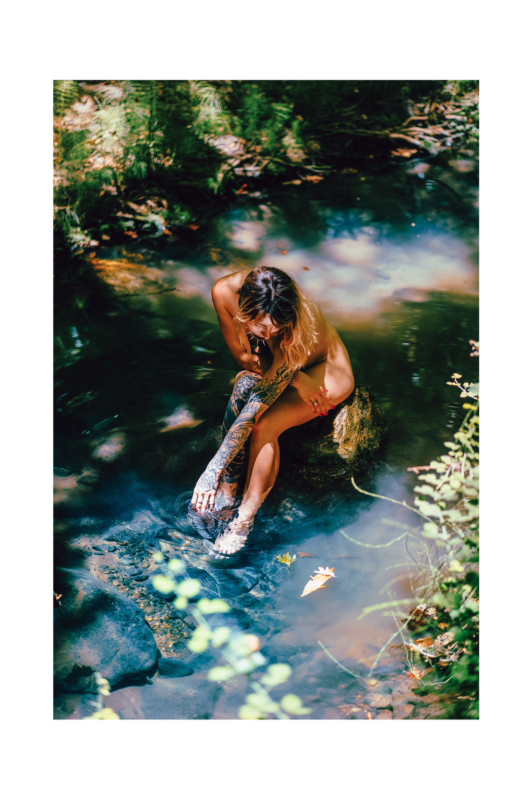

A quiet way of seeing
Photography has always been a way for me to pay attention — to people, to light, to what is real.

I photograph people because I am endlessly curious about what makes each of us unmistakably ourselves.
[Write a few sentences here, in your own words, about how you began photographing people.]
My work is quiet and unhurried. I look for natural light, honest expression and the moments that happen between poses — the ones people recognise when they see the photographs later.
[Add one personal detail here — where you are based, the places you love to photograph, or what you value most about working with people.]
I work in studios, in homes and outdoors. Wherever we are, the approach is the same: presence, patience and space to be yourself.
We are all more beautiful and remarkable than we allow ourselves to believe. A photograph can be a gentle reminder of that.